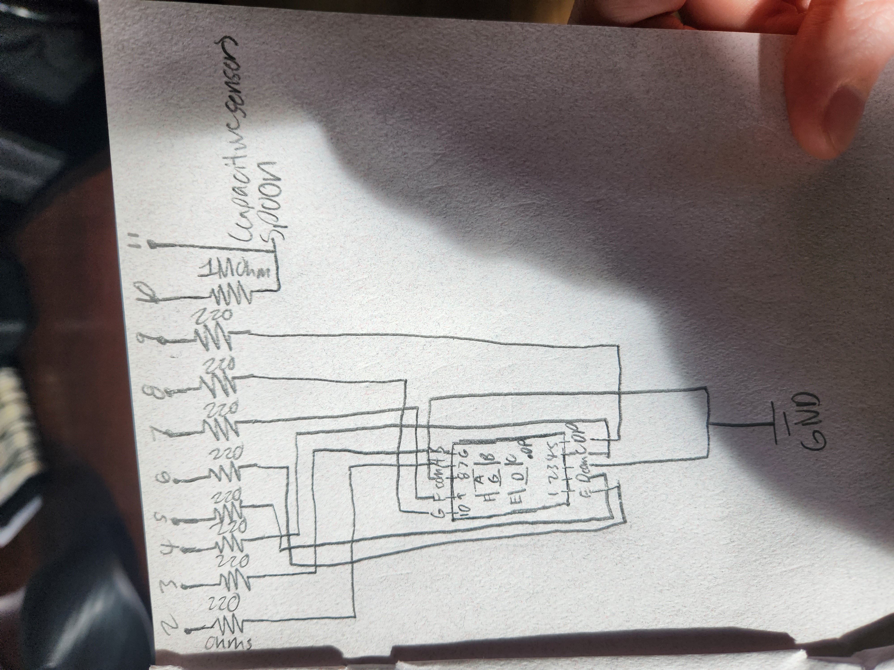

A sensor that lets my roommates and I know when the garage is open. It uses a red light to let us know when the garage is open. The sensor can be stopped from notifying us to prevent the use of excess electricity when we want the garage door open for a long time.
The sensor detects the distance in front of it, if the distance is that from it to the ceiling (+-2cm), the door is closed and it does nothing else. If the distance is that from it to the garage (+-2cm), the garage door is open. If it senses the garage door is open, then it will turn on the red LED to notify people that the garage is open. If the garage is open but we don't want it to notify us, you press the button. If the button is pressed the green LED turns on and nothing else happens. It stays in that state until the button turns off.
Red and Green LED Resistor:
5V-1.8V = 3.2V
3.2 = 20mA * R
3.2/0.02 = R
R = 160 ohms
Closest resistor I have above it is 220 ohms:
V/I has to be less than 30mA
3.2/220 = 14.5mA so it works the best, I can't go down to 100ohms because 3.2/100 = 32.0mA which is above 30mA
#include // button library inclusion
int trigPin = 2; // TRIG pin
int echoPin = 3; // ECHO pin
int redPin = 12; // pin where red LED is attached
int greenPin = 13; // pin where green LED is attached
int ceilingLength = 20; // length to ceiling in cm just for documentation
int garageLength = 8; // length to garage door when open in cm
float duration_us, distance_cm; // initializes the distance values to be used
PinButton myButton(7); // connects button to library
const int buttonPin = 7; // the number of the pushbutton pin
int buttonState = 0; // variable for reading the pushbutton status
void setup() {
Serial.begin (9600); // begin serial port
pinMode(trigPin, OUTPUT); // configure the trigger pin to output mode
pinMode(echoPin, INPUT); // configure the echo pin to input mode
pinMode(12,OUTPUT); // Initialize pin 12 as output
pinMode(13,OUTPUT); // Initialize pin 13 as output
}
void loop() {
buttonState = digitalRead(buttonPin); // get button state (HIGH/LOW)
if (buttonState == HIGH){ // if button state is high
digitalWrite(greenPin, HIGH); // turn on green LED
digitalWrite(redPin, LOW); // turn off red LED
} else { //if button state is low
digitalWrite(greenPin, LOW); //turn off green LED
}
digitalWrite(trigPin, HIGH); // Ultrasonic sensor powered
delayMicroseconds(10); // generate 10-microsecond pulse to TRIG pin
digitalWrite(trigPin, LOW); // Ultrasonic sensor de-powered
duration_us = pulseIn(echoPin, HIGH); // measure duration of pulse from ECHO pin
distance_cm = duration_us * 0.017;
// print the value to Serial Monitor
Serial.print("distance: ");
Serial.print(distance_cm);
Serial.println(" cm");
if (distance_cm <= garageLength+2 && distance_cm >= garageLength-2) { // if the length measured is +-2 from garageHeight
digitalWrite(redPin, HIGH); // turn the red LED on (HIGH is the voltage level)
}
if (distance_cm >= garageLength+2 || distance_cm <= garageLength-2) { // if the length measured is +-2 from garageHeight
digitalWrite(redPin, LOW); // turn the red LED off (HIGH is the voltage level)
}
delay(500); //delay for half a second
}